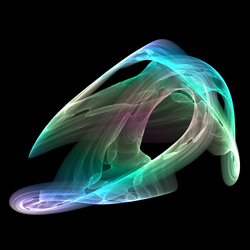
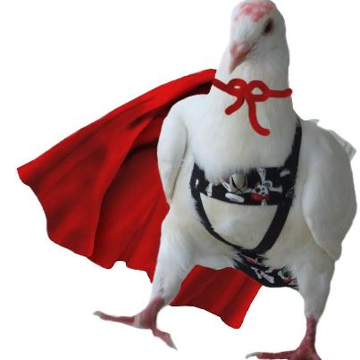

Yet another guide to FOSS
Nguyễn Hà Dương,
@cmpitg,
cmpitg [at] gmail dot com
Yet another guide to FOSS
Some links
This presentation:
https://github.com/CMPITG/aiti-aptech-yagfoss
or
http://goo.gl/1ylfR
Contributing to this talk -
real-time!
http://goo.gl/XhtOZ
About Me

Nguyễn Hà Dương (@cmpitg)
Certified Mozillian:
cmpitg
Fedora Ambassador
Member of
Community Space,
Hanoi Coding Dojo, ...
Agenda
Why this talk? Why BoF?
Show time!
Another dummy guide to FOSS
Current active FOSS groups/communities in Hanoi
Q&A
Why this talk?

Photo by from Facebook
Interrupt me if you want
Show time!
Mozilla Nightly & WebGL technology:
BananaBread
Simple chat server with Node.js
Show time!
BananaBread:
https://developer.mozilla.org/en-US/demos/detail/bananabread
Demos on MDN:
https://developer.mozilla.org/en-US/demos/
Engine and libs:
http://goo.gl/XHssq
Learning WebGL:
http://learningwebgl.com/blog/
Node.js homepage:
http://nodejs.org/
Node.js introduction:
https://speakerdeck.com/u/cmpitg/p/node-dot-js-introduction
Another dummy guide to FOSS
FOSS = Free and Open Source Software
NOT just about software
Openness & freedom in technology
Sharing spirit
Foo Camp
BarCamp
Software Freedom Day
FOSS groups
Another dummy guide to FOSS
Empowerment
Having choice
Culture
Commitment & voluntary
It's all about VALUE and FUN!
Current active FOSS groups/communities in Hanoi
Community Space:
http://khonggiancongdong.org/
VFOSSA:
http://vfossa.vn/
Hanoi Coding Dojo:
http://hanoicodingdojo.github.com/
Mozilla-VN:
https://www.facebook.com/groups/mozvn/
VietLUG:
https://www.facebook.com/groups/vietlug/
Ubuntu-VN
https://www.facebook.com/groups/foss.vn/
Q&A
Programming
Technology
Culture & style & community
FOSS in commercial
Others?
Thank you for your attention!

{kind=link}